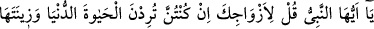
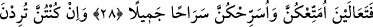
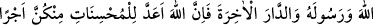
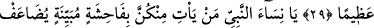
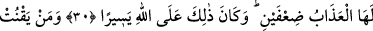
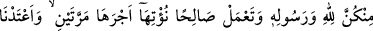
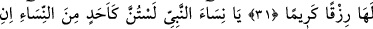
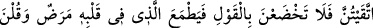
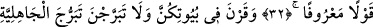
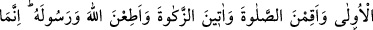
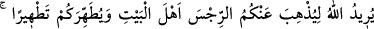
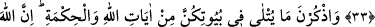
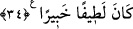
EY PEYGAMBER HANIMLARI!
28. Ey Peygamber! Eşlerine şöyle söyle: “Eğer dünyâ dirliğini ve süsünü
(refahını) istiyorsanız, gelin size boşanma bedellerinizi vereyim de, sizi güzellikle
salıvereyim.”
29. Eğer Allâh’ı, Peygamberini ve ahiret yurdunu diliyorsanız, bilin ki, Allah,
içinizden güzel davrananlar için büyük bir mükâfat hazırlamıştır.
30. Ey peygamber hanımları! Sizden kim açık bir hayâsızlık yaparsa, onun azabı
iki katına çıkarılır. Bu, Allâh’a göre kolaydır.
31. Sizden kim, Allâh’a ve Rasûlü’ne itâat eder ve yararlı iş yaparsa ona
mükâfatını iki kat veririz. Ve ona (cennette) bol rızık hazırlamışızdır.
32. Ey Peygamber hanımları! Siz, kadınlardan herhangi biri gibi değilsiniz. Eğer
(Allah’tan) korkuyorsanız, (yabancı erkeklere karşı) çekici bir eda ile konuşmayın;
sonra kalbinde hastalık bulunan kimse ümide kapılır. Güzel söz söyleyin.
33. Evlerinizde oturun, eski cahiliye âdetinde olduğu gibi açılıp saçılmayın.
Namazı kılın, zekâtı verin, Allâh’a ve Rasûlü’ne itâat edin. Ey Ehl-i Beyt! Allah
sizden, sadece günahı gidermek ve sizi tertemiz yapmak istiyor.
34. Evlerinizde okunan Allâh’ın âyetlerini ve hikmeti hatırlayın. Şüphesiz Allah,